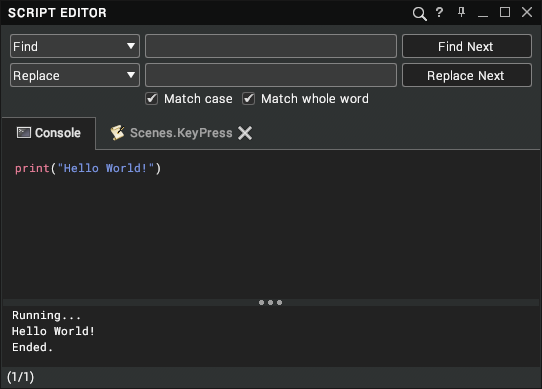
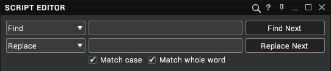

Using the Script Editor
This page gives an introduction to using the script editor.
The Script Editor is a simple text editor that permits you to write Lua scripts and GLSL code. To open the Script Editor, click on the Virtalis button at the top-left of the Toolbar and select Windows > Script Editor. Alternatively, click and hold left mouse button over the Windows menu of the Toolbar and select Script Editor. It can also be shown or hidden with Ctrl + L.

Tab Bar
The tab bar permits multiple scripts to be opened at once (alongside the Console, which is always open). The title of a tab is the name of the parent node that the script is attached to followed by the type of script. The icon may be one of the following:
Icon | Description |
|---|

| A script with no unsaved changes or compile errors. |
| A script with unsaved changes. |
| A script with compile errors. |
Mouse over a tab to see a tooltip with the path to the script in the scene. Right-click on a tab to open the context menu.
Text Editor
The text editor is the main panel of the window. It permits code to be created and edited and supports typical programming aids like syntax highlighting and autocomplete.
Syntax Highlighting
The Script Editor supports the following syntax highlighting:
Colour | Description |
|---|
White | Default text like user variables, functions, and operators, etc. |
Red | Lua keywords. These are reserved and cannot be used for variable and function names, etc. The reserved keywords are: and, break, do, else, elseif, end, false, for, function, if, in, local, nil, not, or, repeat, return, then, true, until, and while. |
Blue | Literal strings (i.e. text wrapped in quotes). |
Green | Comments. |
Autocomplete
The autocomplete list appears for Visionary Render Lua functions (which are prefixed by vr) and registers (which are prefixed by __). It appears automatically as you type. Double-click on one of the options to insert its text into the editor. Alternatively, use the Up and Down arrow keys to navigate the list and press Enter to select an option.
Drag-and-drop
The text editor can accept nodes dragged from one of the tree views or Browser. In response, it creates a variable in the current Script that links to the dropped node. When dragging and dropping from the 3D view, a combination of Ctrl and/or Shift can be used to select which node to add to the script. The following modifier keys can be used:
Modifier Key | Action |
|---|
None | Add the Assembly that was dragged. |
Ctrl
| Add the Model of the part that was dragged. |
Shift
| Add the GeoGroup of the part that was dragged. |
Ctrl + Shift
| Add the Material of the part that was dragged. |
Right-click in the text area to show the context menu.
Output Panel
The Output panel displays any compile errors and text printed by Lua scripts. Click and drag the bar above it to adjust its vertical size. Right-click in the text area to open the context menu.
Console
The Console tab can be used to create and execute simple scripts. First, enter your script into the Script Editor (it can be multiple lines). Now right-click in the text area and select Execute from the context menu, or press Ctrl + E.
The Output panel will display any errors if the script failed to compile. If the script is okay, the Output panel will show any output from Lua's print function. Any script that is executed in the Console will start by printing Running... to the Output panel. When execution of the script is complete, it prints Ended.. It does this because of the sleeping behaviour that is available in Visionary Render 2.0.0 and above, in which a script may pause its execution and resume after a specified time period.
Example Code
The following example shows how to print the Visionary Render version number:
-- Get the Visionary Render version number.
local version = vrGetVisRenVersion()
-- Print it to the Output panel.
print(version)
Running...
2020.1.0
Ended.
Caution
Code in the Console is temporary and won't be saved when you exit Visionary Render.
Find and Replace

Click on the
button to show or hide the Find and Replace bar. It can also be shown from the Script Editor with Ctrl + F.
Find
The Find drop-down has the following options:
Option | Description |
|---|
Find | Search for text in the current tab (default option). |
Find (All Tabs) | Search for text in all open tabs. |
Find (Entire Scene) | Search for text in all Scripts in the scene. New tabs will be created for any Scripts that contain the text but aren’t already open. |
Enter the text to search for in the text edit box and press the Find Next button to trigger the Find operation. The text in the Find box is coloured red when it can’t be found.
Replace
The Replace drop-down has the following options:
Option | Description |
|---|
Replace | Replace the next instance of the text in the Find box with the text in the Replace box (default option). |
Replace All | Replace all instances of the text in the Find box with the text in the Replace box. |
Enter the text to be inserted in the text edit box and press the Replace Next button to trigger the Replace operation.
Note
The scope of the Replace is determined by the Find combo box.
Filters
The following filters can be applied to the search:
Filter | Description |
|---|
Match case | Perform a case-sensitive search (i.e. a search for lower case a would ignore any capital A’s in the text). |
Match whole word | Ignore any words that contain the search text in them but have other characters. |